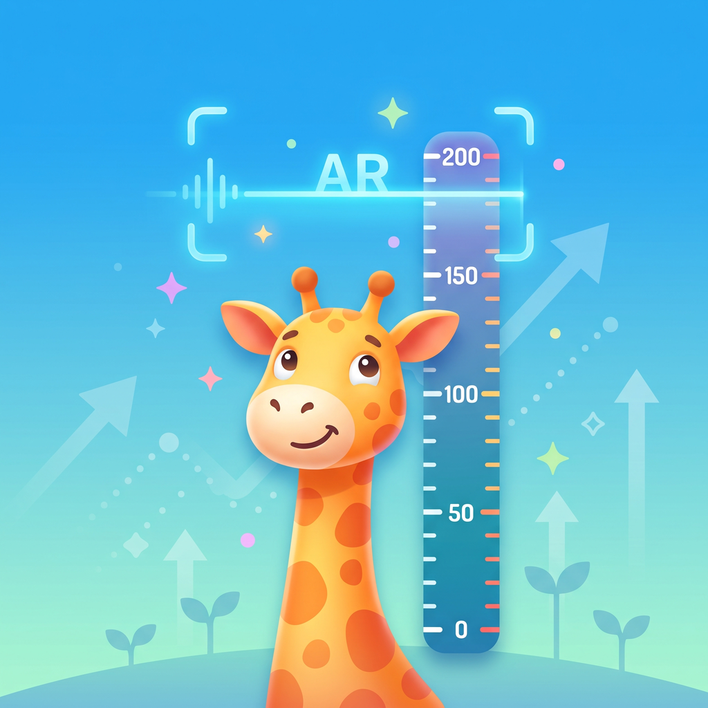

打开相机，估测身高
常规测量引导确认地面与头顶；支持 LiDAR 的设备可使用高级测量。确认画面和结果后，还能修正数值或重新测量。
估测结果 · 重要数值请复核
简单记录，长久陪伴
不用注册账户。先测量，再确认保存给谁，也可以把身高计测得的数值记进来。
常规测量引导确认地面与头顶；支持 LiDAR 的设备可使用高级测量。确认画面和结果后，还能修正数值或重新测量。
估测结果 · 重要数值请复核为每位成员建立独立档案。按日期查看、编辑或删除身高记录，手动录入时可标记身高计、卷尺等测量来源。
多成员 · 历史记录 · 单位切换回看个人趋势；填写出生日期和参考曲线所需的性别资料后，可查看适用年龄的 CDC 生长参考曲线。
0–20 岁参考 · 不用于诊断不止一种记录方式
AR 估测、身高计、卷尺，或手动记一笔。保留测量日期与来源，让下一次回看更有依据。
婴幼儿卧姿身长请使用合适的量具测量后手动录入。
按日期回看，支持厘米与英尺 / 英寸。
让每一次测量更从容
请另一位家人持手机。选择平整地面和均匀光线，让头顶与双脚完整入镜。
避免厚鞋底、帽子和蓬松发型影响判断。手机与被测者保持合适距离，以全身入镜为准。
缓慢移动手机扫描地面。常规测量确认脚下基准，再检查或调整头顶线；高级测量按提示保持站稳。
检查测量画面与估测值，必要时重测或修正。确认保存对象后保存，也可以选择不保存。
AR 结果是估测值。“稳定”表示短时间波动较小，不代表绝对准确。短期身高差异可能来自姿势、测量时段或误差；重要记录建议用身高计复核。
你可能想知道
支持所需 AR 能力的设备可使用常规引导测量；具备所需 LiDAR 场景深度能力的设备还可使用高级测量。功能以应用的实际设备检测为准。不能进行 AR 测量时，仍可手动录入和管理历史记录。
长高鹿用于日常估测和记录，不是医疗器械，也不提供生长发育诊断。CDC 2000 曲线以美国儿童青少年为参考人群，0–2 岁为卧姿身长、2–20 岁为站立身高，不应只凭单次估测或某条百分位线判断健康状况。有疑问请咨询专业医务人员。
可以。拒绝或关闭相机权限只会影响 AR 测量，手动录入、成员管理和查看记录仍可使用。之后可在 iOS 系统设置中重新授权。
当前版本没有应用自建的云同步、导出或恢复功能。系统级备份与恢复由你的 iOS 设置决定，不能保证卸载重装或换机后恢复记录。删除成员会一并删除其关联记录，请确认后操作。
可以。统计默认关闭，你可在应用“设置 → 允许使用统计”中选择。开启后友盟会处理设备标识符、设备与网络信息及应用使用信息；成员昵称、出生日期、性别、身高、备注及相机图像不作为统计参数上传。详情见可选使用统计说明。
长高鹿 · iOS 15.0 及以上
下载入口将在正式链接确认后提供。